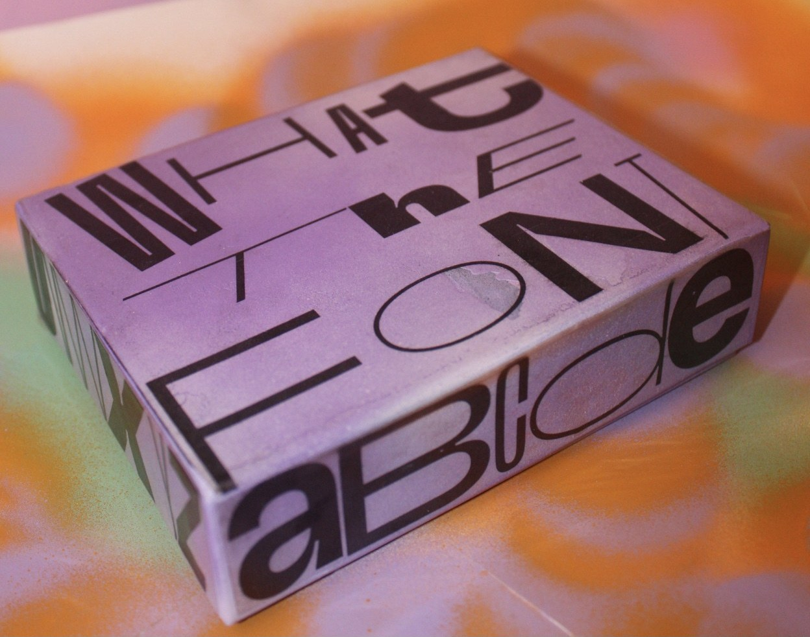
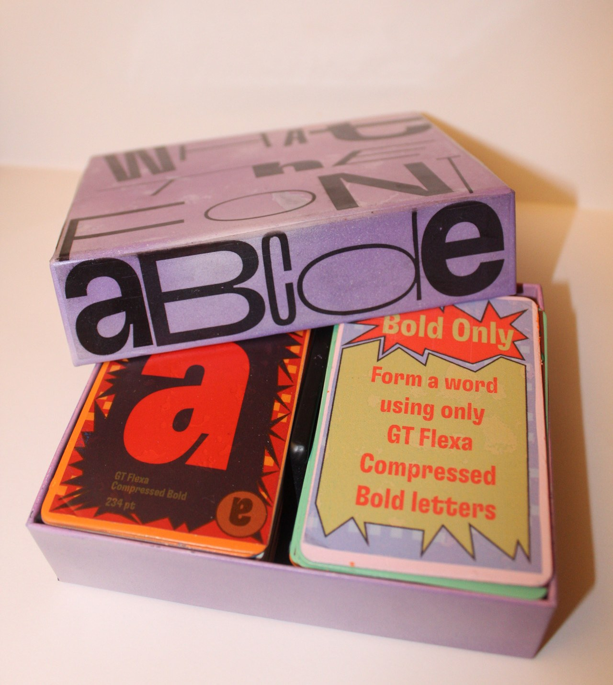
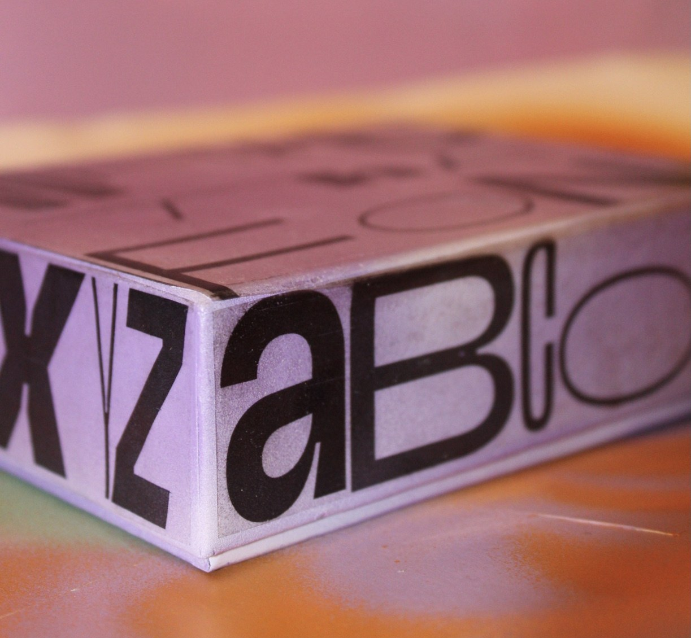
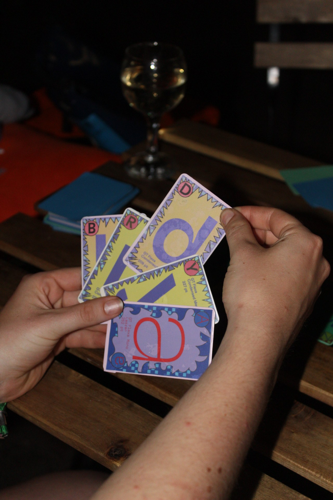
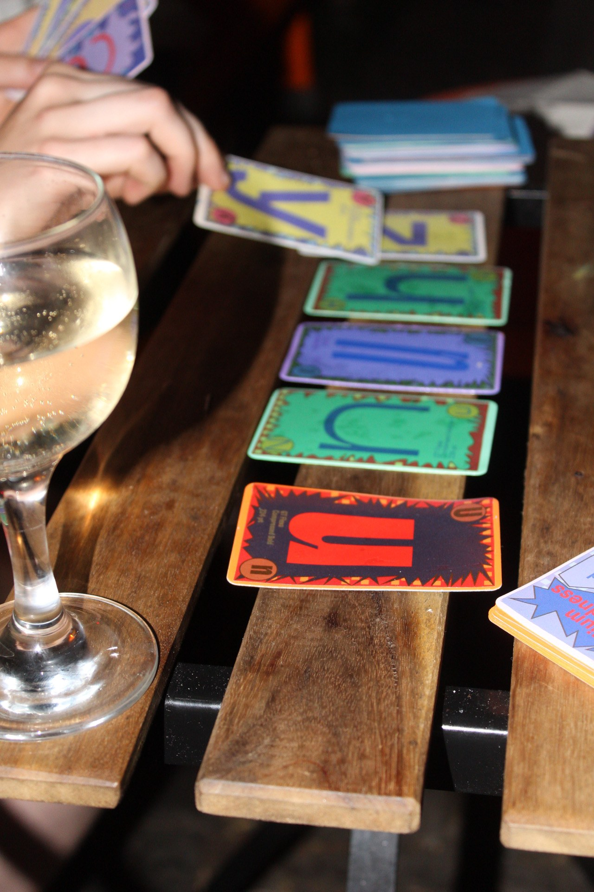
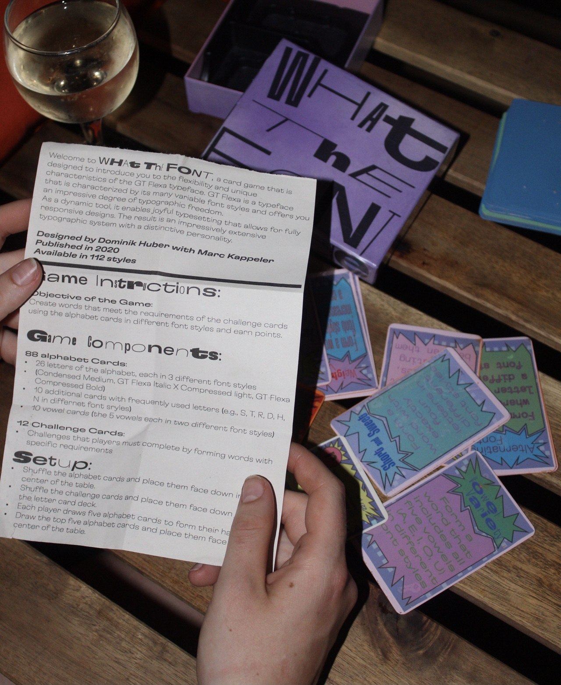
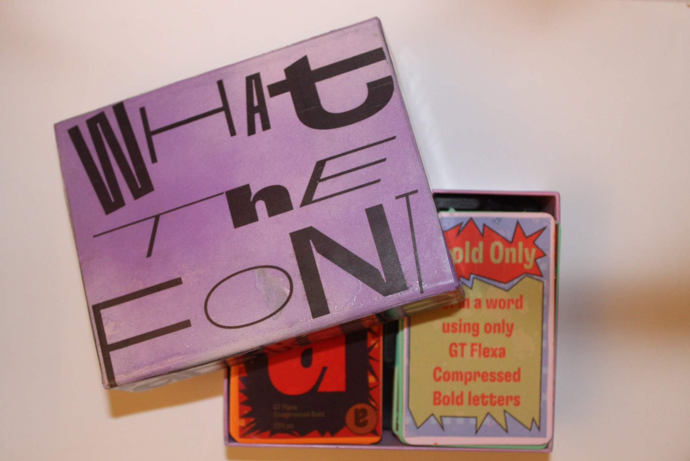
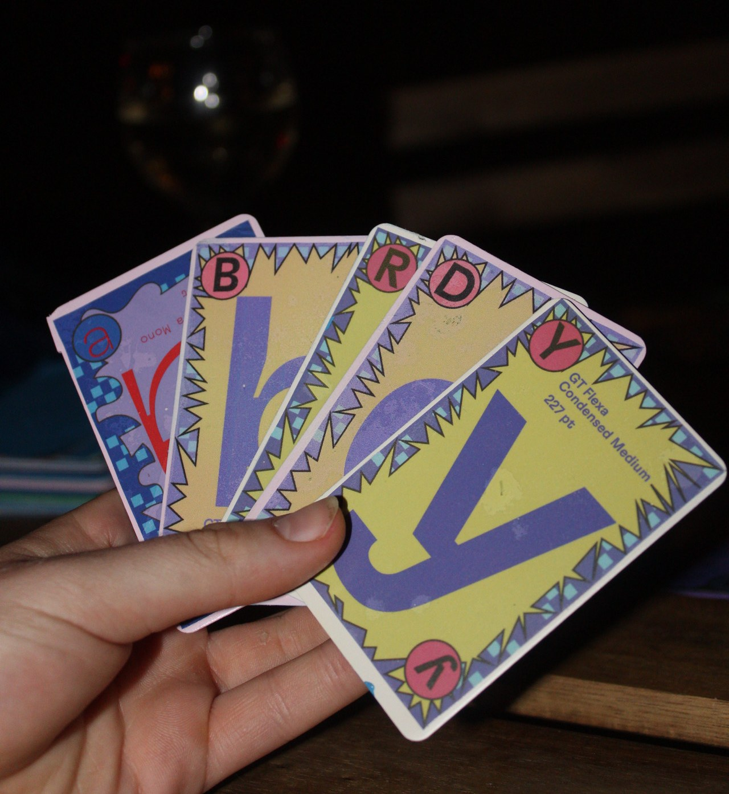

What the Font
What the Font? ist ein interaktives Kartenspiel, das Typografie auf spielerische Weise erfahrbar macht. Im Mittelpunkt steht die Schriftfamilie GT Flex, die mit ihren 112 Schriftstilen eine große gestalterische Vielfalt bietet. Das Spiel verbindet typografisches Wissen mit Kreativität und spielerischem Wettbewerb.
2024


Idee
Die Idee war es, die Unterschiede zwischen verschiedenen Schriftschnitten wie Bold, Italic, Medium und Light auf eine einfache und unterhaltsame Weise zu vermitteln. Statt Typografie nur theoretisch kennenzulernen, sollen die Spielenden selbst mit Buchstaben experimentieren und ein Gefühl für unterschiedliche Schriftstile entwickeln.

Konzept
Das Spielprinzip orientiert sich an Scrabble. Mithilfe von Buchstabenkarten werden Wörter gebildet, wobei zusätzliche Challenge-Karten typografische Aufgaben vorgeben. Beispielsweise darf ein Wort nur aus Bold-Buchstaben bestehen oder muss bestimmte Schriftstile kombinieren.
Durch das Tauschen, Ziehen und Ablegen von Karten entstehen immer neue Möglichkeiten. Das Kartenset besteht aus 88 Alphabetkarten, 12 Challenge-Karten sowie zusätzlichen häufig verwendeten Buchstaben und Vokalen in unterschiedlichen Schriftschnitten.



Umsetzung
Die Gestaltung aller Spielkarten erfolgte digital in Adobe Illustrator. Dabei wurden die verschiedenen Schriftschnitte der GT Flex gezielt eingesetzt, um die typografischen Unterschiede sichtbar zu machen. Anschließend wurden die Karten gedruckt und von Hand zugeschnitten.
Auch die Verpackung wurde eigenständig gestaltet und umgesetzt. Die Spielbox wurde gebaut und mit dem zuvor entwickelten Design beklebt, sodass ein einheitliches Erscheinungsbild von Spiel und Verpackung entstand.

